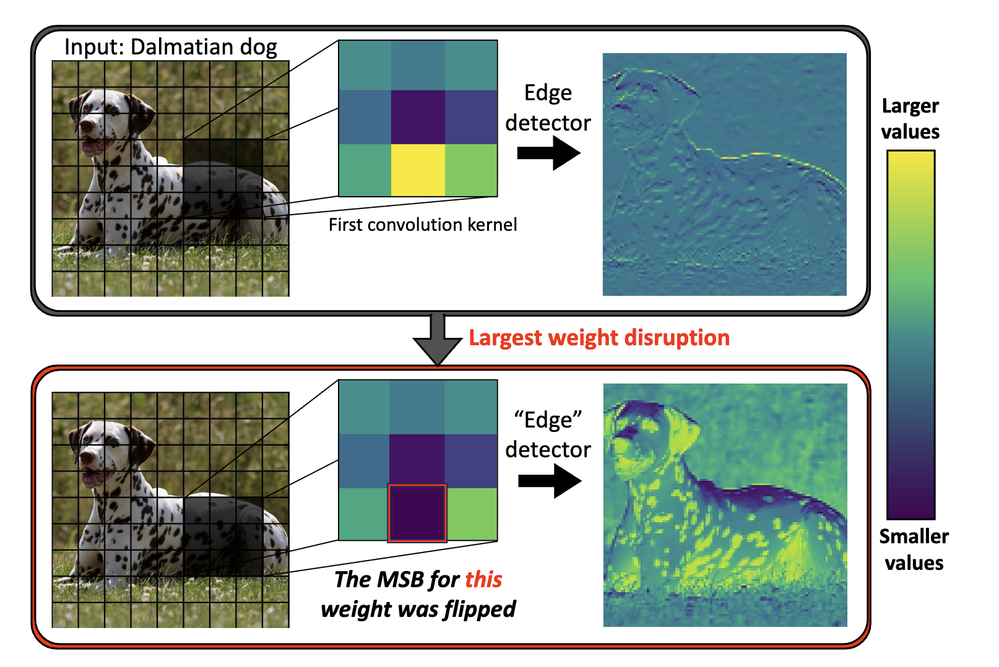
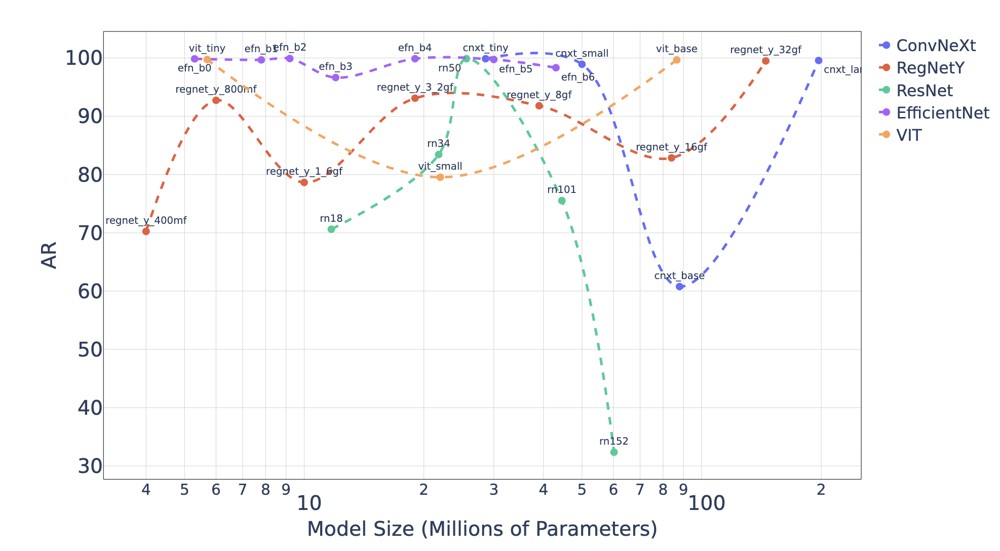
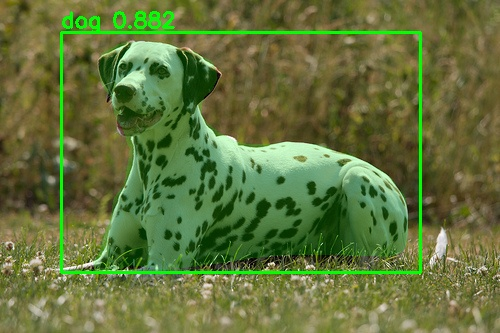
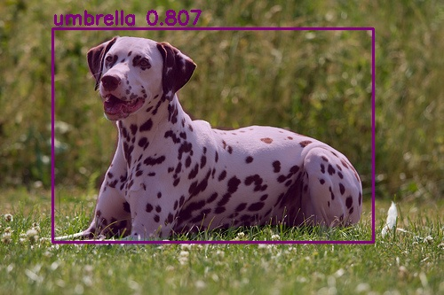

Overview
Deep neural networks are vulnerable to catastrophic failure from flipping just a few sign bits in model parameters. We present Deep Neural Lesion (DNL), a data-free method that identifies and exploits critical parameters across vision and language domains.
Our approach requires only write access to stored weights—no training data, no optimization, minimal computation. This makes it practical under realistic threat models where attackers compromise model storage through firmware exploits, rootkits, DMA attacks, or Rowhammer vulnerabilities.
- ResNet-50: 2 sign flips → 99.8% accuracy drop
- Mask R-CNN / YOLOv8-seg: 1–2 flips collapse detection and segmentation
- Qwen3-30B & Nemotron 8B: Few flips reduce reasoning and task accuracy to near-zero
Methodology
Attack Variants
Pass-Free DNL: Identifies critical parameters using magnitude-based heuristics and early-layer targeting with zero additional computation.
Enhanced 1-Pass DNL: Refines parameter selection with a single forward and backward pass on random inputs, achieving stronger attacks with minimal overhead.
Why Sign-Bit Flips Matter
- Clean disruption: Flipping the sign bit instantly negates weights, maximizing feature map corruption
- Hardware feasibility: Bit flips in fixed positions are more reliably achievable in physical attacks
- Early-layer criticality: High-magnitude weights in early layers have outsized impact on all downstream representations
- Universal vulnerability: Pattern holds across CNNs, Transformers, and MoE architectures
Image Classification Results
Model Vulnerability Hierarchy
ResNet-50
2 flips: 99.8% drop
76.1% → 0.0%
EfficientNet-B7
3 flips: 95%+ drop
Scales worse than ResNet
Vision Transformer
Early blocks critical
Similar pattern to CNNs

Detection & Segmentation Results


Mask R-CNN
1–2 flips in backbone
AP → 0, Mask AP → 0
YOLOv8-seg
1–2 early flips
Segmentation incoherent
Key Finding
Backbone criticality
Head can recover
Language Models Results
Qwen3-30B-A3B
2 flips (different experts)
78% → 0% reasoning
Qwen3-4B
14 flips all layers
100% accuracy reduction
Nemotron 8B
32 flips first 5 blocks
Complete collapse
BERT (Text Encoder)
Exponent flips more effective
than sign flips
RoBERTa
Early layers still critical
Encoder-specific pattern
DistilBERT
Compressed model
Enhanced vulnerability
Language Model Attack Patterns
Decoder-only models (Qwen, Nemotron): Sign-bit attacks are highly effective, especially when targeting the first 5 blocks. Two targeted flips can reduce Qwen3-30B accuracy from 78% to 0%.
MoE routing: Targeting different experts in Mixture-of-Experts models amplifies the attack impact, as each token's routing path becomes compromised.
Encoder models (BERT, RoBERTa, DistilBERT): Exponent-bit attacks are more destructive than sign flips, causing extreme rescaling rather than simple negation.
Generation behavior: Attacked models degenerate into repetitive, nonsensical text rather than near-miss errors—indicating catastrophic failure rather than graceful degradation.
Attack Strategy Comparison

Defense & Implications
While the vulnerability is severe, we demonstrate that selective hardening of critical parameters provides practical defense. By protecting only the top 0.1-1% most vulnerable weights, models achieve substantial resilience without major performance overhead.
Key Takeaways
- Critical parameters are universally identifiable across architectures and domains
- Defense cost scales better than attack identification for large models
- Once attackers gain parameter write access, minimal computation suffices for catastrophic failure
- Data-free nature makes detection and attribution exceptionally challenging
Citation
@article{galil2025maximal,
title={Maximal Brain Damage Without Data or Optimization:
Disrupting Neural Networks via Sign-Bit Flips},
author={Galil, Ido and Kimhi, Moshe and El-Yaniv, Ran},
journal={Transactions on Machine Learning Research},
year={2025},
url={https://arxiv.org/pdf/2502.07408}
}